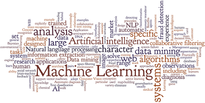

What is Machine Learning?

Machine learning is a field of computer science that seeks to create programs that learn from example data how to perform tasks that were not explicitly programmed. Machine learning is often split into several task fields, most famously regression, classification, generation, and pattern discovery. This can be further split into several learning types, which include supervised, unsupervised, semi-supervised, and reinforcement learning. These task fields can be further split by data-type, yielding, among others, sub-fields like image classification, image captioning, speech generation, topic classification, etc. Here we will learn theory and standard nomenclature, a few examples of models, and some general facts about machine learning at large.
We'd like to stress that every method within the field is in a very strong sense unique. It has its own formalism, its own background, history, intended usage, and very precise advantages and disadvantages. There is no general purpose theory that elucidates all of machine learning. Like any other enterprise, this devil is in its details.
That being said, there are some commonalities. We’ll be describing machine learning term-wise and piece-wise, here and in other articles. You’ll notice that everything described below assumes competency with the nature of data science in general. We expect that you understand what a feature space is, and correspondingly, what it means to have a dataset represented as a matrix or array. All these methods work under the assumption that there is some usable pattern in feature space that corresponds to the classes that we, as humans, assign.
The underlying formalism that allows one to ‘unify’ all machine learning models is the field of probability and statistics, specifically within the study of stochastic processes. We urge the user to familiarize themselves with the field if they wish to work within the theoretical, formal areas of machine learning. A piece-wise understand will do for engineers or scientists interested in expanding their skill-set.